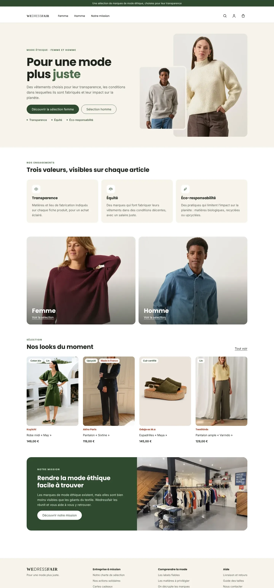
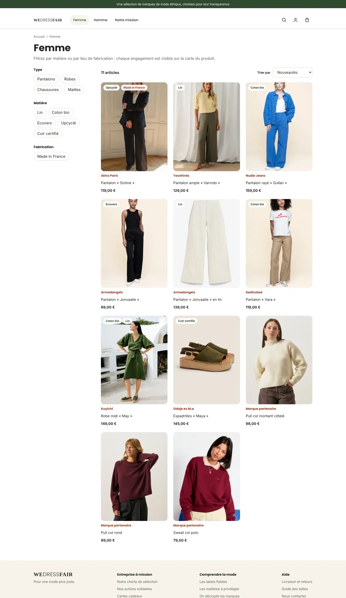
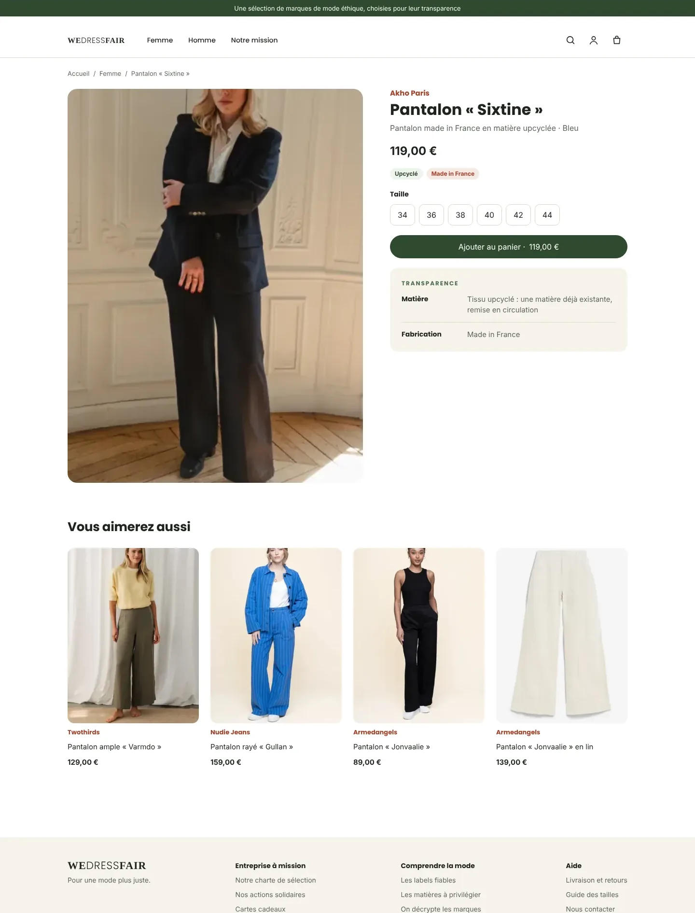
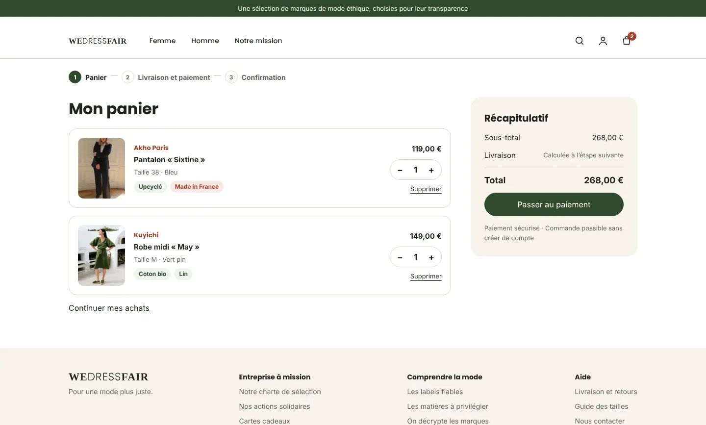
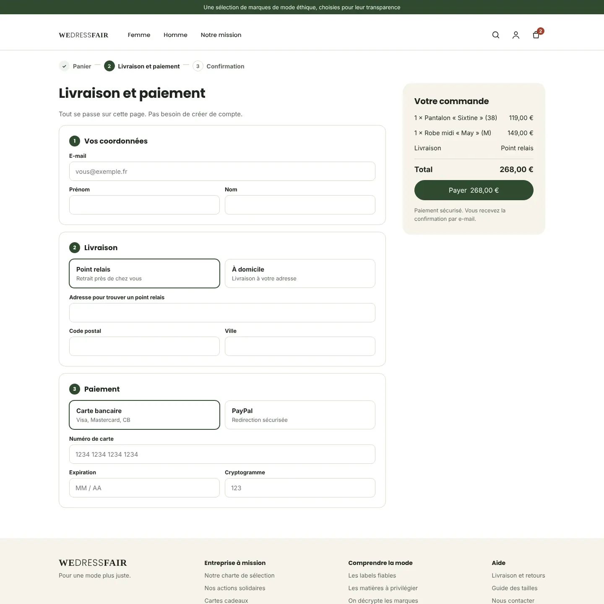
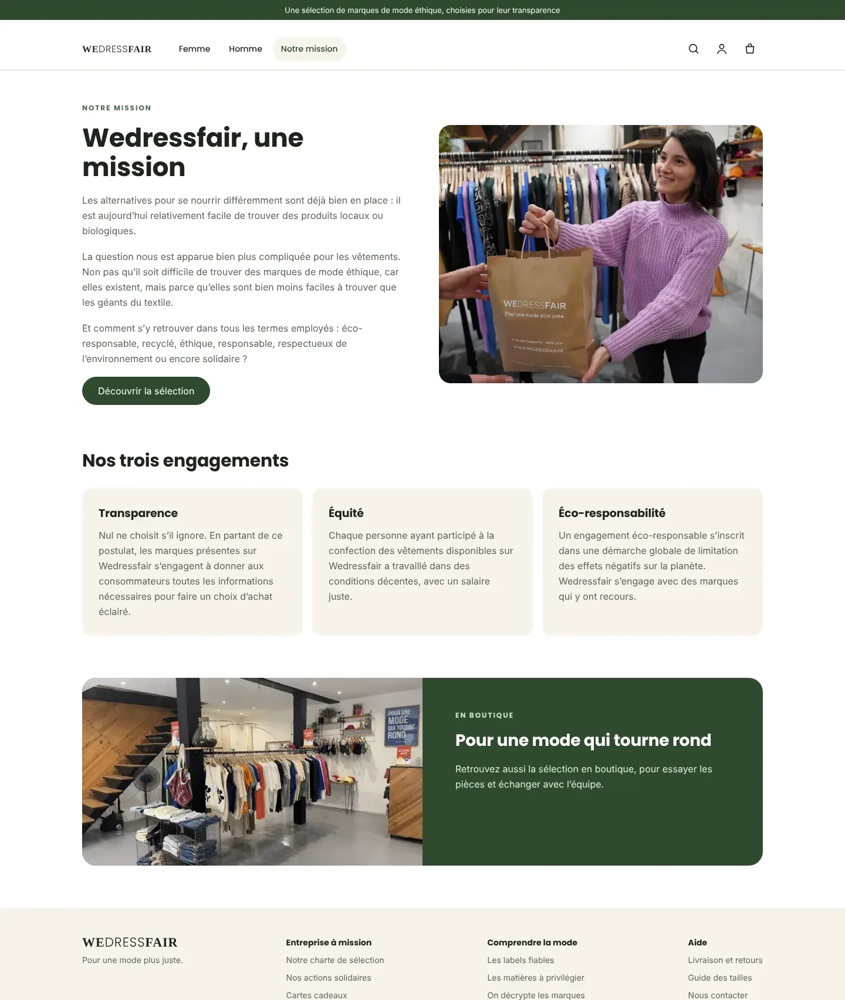
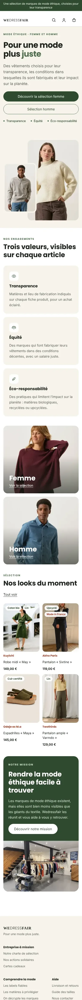
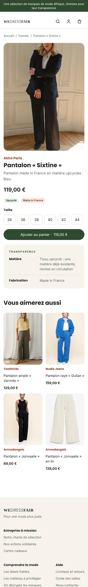
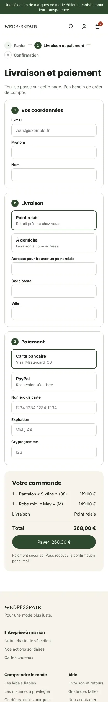

Refonte Wedressfair, pour une mode plus juste
Refonte du site d’une boutique de mode éthique : un parcours d’achat complet, du choix d’un vêtement au paiement, où chaque engagement de la marque devient visible et utile pour choisir.

01
Le projet
Dans le cadre de mon Master Expert Transformation Digitale, j’ai mené la refonte du site de Wedressfair, une boutique qui réunit des marques de mode éthique.
Objectif : retravailler l’ergonomie et l’expérience utilisateur pour lever les points de friction pendant la navigation et le processus d’achat, sans diluer l’identité engagée de la marque.
02
Trois valeurs à rendre visibles
Tout savoir sur le produit
Matière et lieu de fabrication réunis dans la rubrique « Transparence » de chaque fiche.
Des conditions justes
Mettre en avant les marques qui rémunèrent correctement leurs équipes.
Moins d’impact
Matières biologiques, recyclées ou upcyclées, repérables d’un coup d’œil grâce aux étiquettes.
03
Le parcours d’achat
Six écrans, de l’inspiration au paiement. Faites défiler chaque écran pour voir la page entière.





Les visuels de mailles et de pièces homme illustrent la maquette : leurs noms et prix sont fictifs.
04
Version mobile



05
Une charte affinée
Le vert et le logo de la marque sont conservés ; la palette s’enrichit pour l’interface.
06
Ma démarche
De l’identité à l’interface
- Analyse du parcours d’achat : repérer les points de friction
- Logo et moodboard conservés : un univers naturel, chaleureux et engagé
- Charte affinée : palette d’interface, typographies et composants
- Maquettes desktop et mobile des six écrans clés
07
La page d’accueil complète
La maquette desktop de la page d’accueil, du bandeau au pied de page.